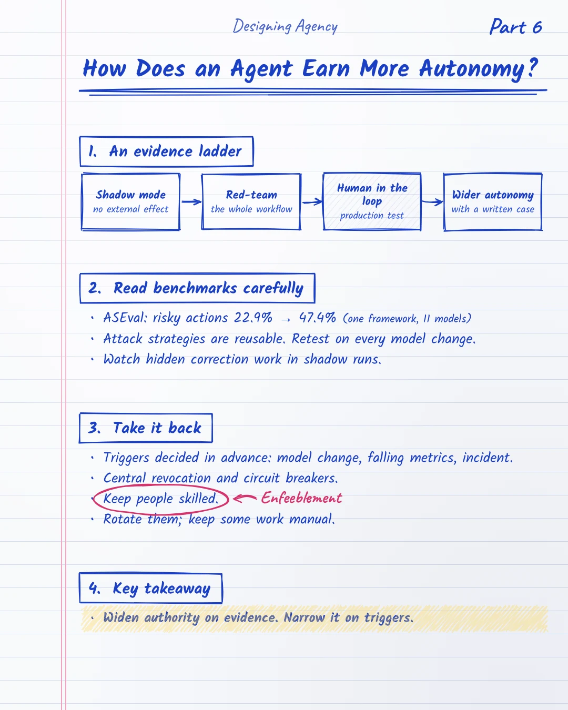

Blog / AI agents and governance / Designing Agency
How does an agent earn more autonomy?
Evidence for widening authority, and triggers for narrowing it again
No agent should start with the authority it might eventually deserve. The question is what evidence justifies more, and what takes it back.
A case, not a feeling
The AI Safety Atlas describes the safety case: a structured argument, supported by evidence, that a system meets the thresholds for deployment. It can include threat modelling, red-teaming results and post-deployment monitoring plans, and it supports both approval up front and tracking afterwards.1 The Atlas discusses frontier AI, but the idea transfers. Before moving an agent a step up the ladder from Part 1, write down the claim, for example “the agent can draft purchase orders that need no material correction 95% of the time”, and the evidence for it.
Shadow runs
The cheapest evidence comes from running the agent beside the existing process without letting it act. Christopher Koch and Joshua Wellbrock call this shadow mode the most important discipline: the agent processes real or realistic cases next to the existing process, but without autonomous external effect. It reveals missing data, kinds of hallucination, fragile integrations, false escalations, prompt injection issues and hidden employee correction work. Their playbook puts shadow mode before a human-in-the-loop production test, and that before a go or no-go decision on scaling.2
For purchasing, the agent drafts an order for every requisition and the drafts are compared with what buyers actually did. The hidden correction work is the number to watch: if buyers quietly fix agent drafts, the agent is not ready, whatever its accuracy on paper.
Testing the whole workflow
Shadow runs show ordinary behaviour. Adversarial testing must cover whole conversations, not single prompts.
ASEval turns benign multi-turn scenarios into risky test cases, runs them against the agent, and judges the complete trace. Its 2,254 executable cases ran against one agent framework (OpenClaw) with 11 models. Its perturbations raised the average rate at which agents were triggered into risky behaviour from 22.9% with existing injection techniques to 47.4%. The judge is itself a model, which agreed with human annotation at 93.2% binary F1.3 What it measures, then, is how often an agent in that framework can be pushed into a risky action, as judged by a model; not how your agent behaves in your own systems.
PIMiner is an automated red-teaming agent that learns a library of prompt injection strategies and transfers it to models it has not seen, with only about ten queries per test. On the IPIArena benchmark it reports attack success rates of 76.2% against Gemini 2.5 Pro, 61.9% against GPT-5.1 and 42.9% against Claude Sonnet 4.54 The lesson is the method: attack strategies are reusable, so red-teaming should be repeated whenever the model changes.
Oversight that tightens itself
Overman and Bayati at Stanford propose a precise mechanism for oversight that becomes more cautious after a mistake. Several weaker overseers score each candidate action; actions that look different from a conservative baseline, such as deferring or doing nothing, are penalised; and the strength of that penalty is tuned online so that the rate of undesirable outcomes stays near a target. The baseline is always among the options. On a modified SWE-bench, overseers using Claude Haiku 4.5 constrained an adversarially misaligned Claude Sonnet 4.6 agent, and empirical violation rates closely matched the specified targets.5
They call it calibrating conservatism. It depends on there being a safe default, which in procurement is easy: leave the requisition as a draft.
Taking authority back
Widening authority needs evidence; narrowing it needs triggers decided in advance: a model or prompt change, falling metrics, a red-team finding, a policy change, any incident. The mechanisms should be ready before they are needed. The property is that the agent's access can be revoked at once, everywhere; one published enterprise design provides it with a central gateway6, and an identity provider or the applications themselves could provide it too. Circuit breakers that stop actions beyond set limits are the second half.7 Berkeley's profile lists shutdown mechanisms and continuous post-deployment monitoring among its key levers.8
Chan and colleagues propose three kinds of visibility into agents: agent identifiers, real-time monitoring and activity logging.9 For any agent that writes to business systems, add a regular reconciliation: every document the agent touched, matched against its log and the delegation trail from Part 3.
Keeping the overseers able to oversee
One risk grows quietly as autonomy grows. The Atlas calls it enfeeblement: human skills erode through countless small decisions to delegate, each rational on its own.1 Buyers who stop negotiating stop being able to judge a negotiation. Rotate people through the work the agent does, and keep a share of cases fully manual.
Notes

Sources
- AI Safety Atlas, Governance chapter and Risks chapter.
- Christopher Koch and Joshua A. Wellbrock, The Integrator Advantage: Controlled Agentic AI for Small and Medium-Sized Companies, arXiv preprint, June 2026.
- Jianan Ma and colleagues, ASEval, arXiv preprint, May 2026.
- Yanting Wang, Chenlong Yin, Runpeng Geng and Jinyuan Jia, Agent Against Agent: An Agentic System for Automatic Prompt Injection Red Teaming, arXiv preprint, August 2026.
- William Overman and Mohsen Bayati, Calibrating Conservatism for Scalable Oversight, arXiv preprint, May 2026.
- Suraj Kumar, Amy Wang and Srinivasan Manoharan, A Gateway Architecture for Enterprise MCP Authentication, arXiv preprint, August 2026.
- Giorgio Piccardo, Giuseppe F. Italiano and Alessio Martino, The Agentic Kill Chain, CEUR Workshop Proceedings, Vol. 4198.
- Nada Madkour and colleagues, UC Berkeley CLTC, Agentic AI Risk-Management Standards Profile, February 2026.
- Alan Chan and colleagues, Visibility into AI Agents, arXiv preprint, 2024.